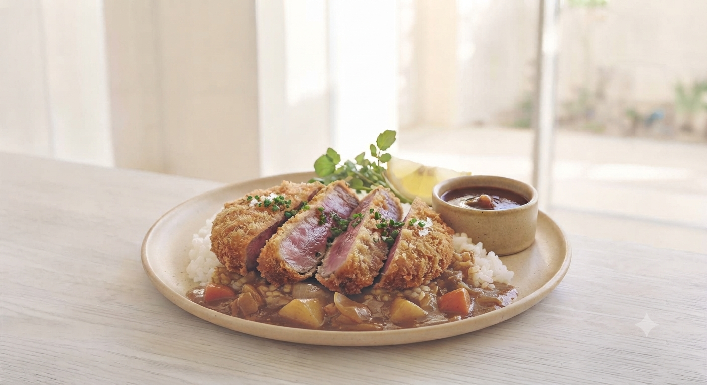
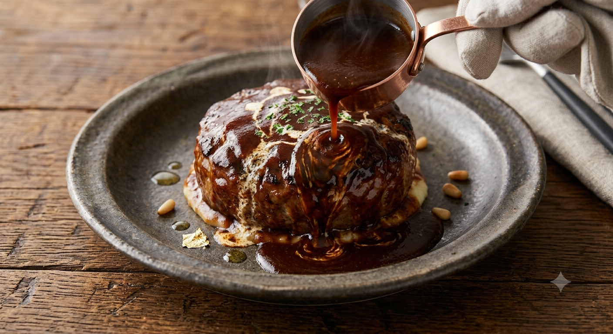
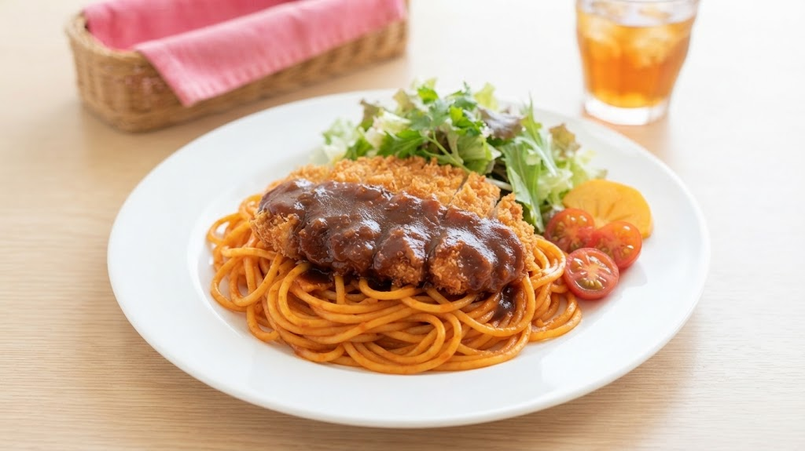

小十郎グリルが長年愛される理由。それは期待を裏切らないボリュームと、一口で心が解けるような懐かしい味わい。1951年生まれ、地元花巻を愛する店主がこだわり抜いた「本物の洋食」がここにあります。


「大人のお子様ランチ的な、好きなものだけが盛られているプレート。ハヤシのコク、バターの薫りが最高です。」
— オムハヤシ愛好家のお客様
「サンプルのままのボリューム！カレーはスパイシーで食べ応え抜群。家族で安心して来られる場所。」
— 育ち盛りのお子様連れのお客様
「自宅でもお店の味を楽しみたい」「パーティーや特別な日にも食べたい」という声から生まれた、新たなお届けのカタチ。
お店の人気カツやジューシーなハンバーグ、コク旨ハヤシのルーをそのままお持ち帰り。家族団らんやホームパーティー、夕食のもう一品にスマホから事前予約できるよう準備を進めています。
遠方の方や、深夜でも小十郎の味が恋しくなるファンのために。お店の味をそのまま閉じ込めた「冷凍真空パック」のオンライン販売および店頭受け取りサービスを開発中です。